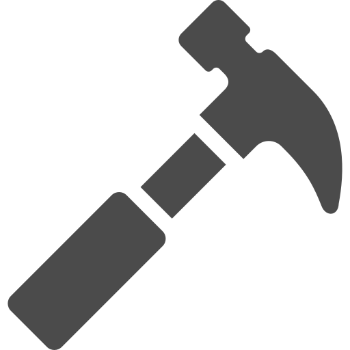

About
このサイトは新本聡のポートフォリオです。
webを通した課題解決やものづくりに関心があります。Webサービスの開発に携わるために独学で勉強中。業務未経験です。
自身の強みは以下の3点だと考えています。
・ビジュアル部分の造形力
・多様な価値観の集団における帰納的合意形成
・既存の価値観にとらわれずに模索し研究する持続力
 Skill
Skill
◆HTML&CSS
・dotinstall、progate、書籍で学習中・ポートフォリオ用ウェブサイトを作成
◆JavaScript
・dotinstall、progate、書籍で学習中
・ポートフォリオ用ウェブサイトを作成
◆Vue.js
◆PhotoShop
◆PremierPro
・ブライダル企業にて研修を受ける
・結婚式披露宴のオープニングムービーを4年間で多数作成
◆Drawing／Painting
・大学時代に本格的に学び、以降制作を行っている・鉛筆、水彩、アクリル、油彩を主に使用
▲現在、オンライン学習サービスや書籍などを活用し、HTML、CSS、JavaScript、Vue.jsを主に勉強中です。
ほかにはAWSやGitHub、Unix、ローカル開発環境の構築方法なども、ほんの少しですが触ってみたりなど、業務に役立つ技術であれば何でも挑戦したいと思っています。
 Works
◆Satoshi Shinmoto Website
・アーティストのポートフォリオサイトをテーマにしたウェブサイトです。
→ こちらから
Career
◆2010.4~2014.3
・国立佐賀大学 文化教育学部 美術・工芸課程 西洋画専攻
・絵画制作（油彩・アクリル・水彩）／アーティストインレジデンス（滞在制作）／アートイベント／ワークショップ等を行う。
◆2014.6~2017.3
・竹田市地域おこし協力隊 嘱託職員 文化振興担当
・モノ作りや表現を身近に体験できる場作り／職人やアーティストが活躍し、街の人と交流できる場作り／竹田総合学院(作家のインキュベーション施設)の簡単な管理、運営等を行う。
◆2017.4~2020.3
・一般社団法人 湘南サドベリースクール スタッフ
・生徒の学びに関わる業務／総務事務／一般事務／広報宣伝事務／会計事務等を行う。
Other
◆好きなもの・こと
美術 /ゲーム（特にアクションやRPG） / 甘い飲食物とコーヒー / 犬（特に柴犬）
◆資格
普通自動車第一種免許／中学校教諭一種（美術・工芸）／高等学校教諭一種（美術・工芸）